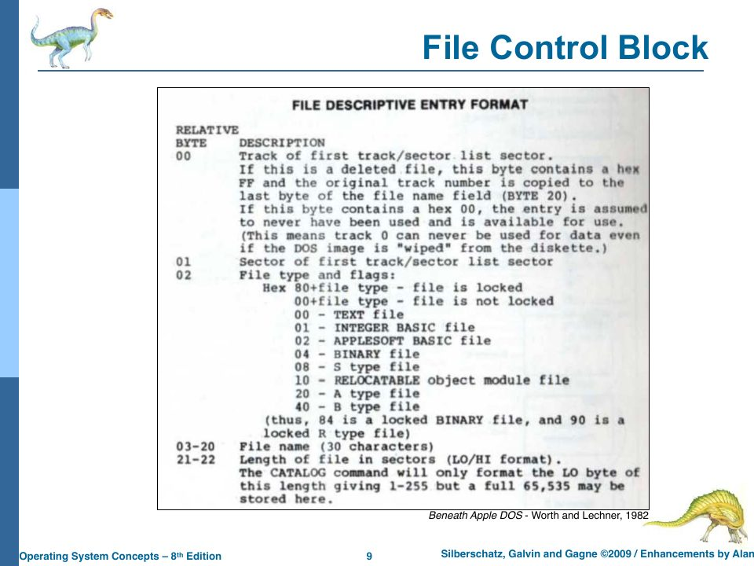
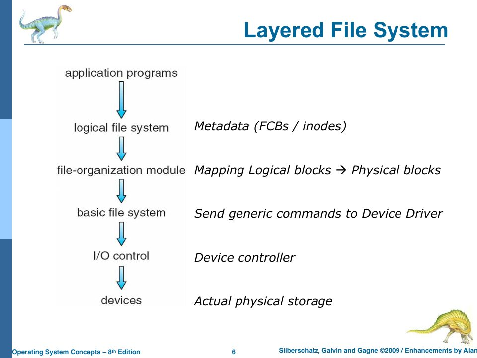
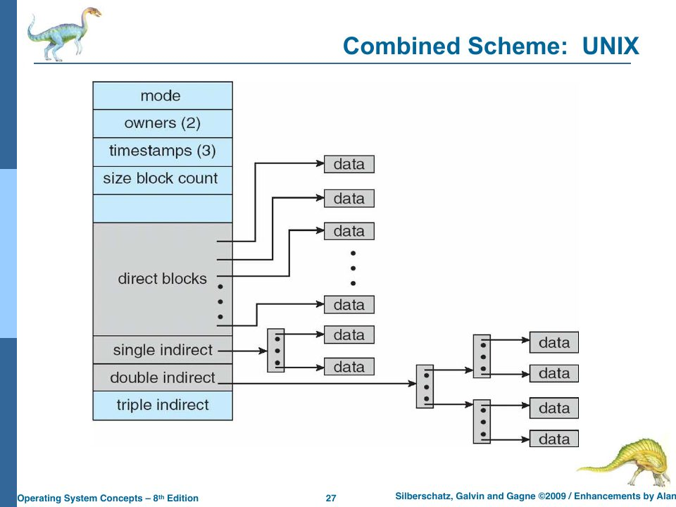
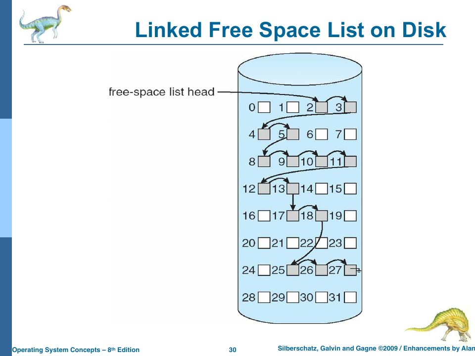

File-System Implementation: The TSB Disk
Slides: Chapter 11, “File System Implementation,” pp. 753–785. Project Part Four; Lab 100.
“What IS a file system? A set of on-disk and in-memory structures… used to describe an Applications Interface (API) [and] physical layout conventions” (slide p. 755). It has “two main faces”: the logical design, how it looks to users (Chapter 14), and the physical design, how the OS implements that efficiently (p. 756). This chapter is the physical design of rObSen’s file system, which lives entirely in one 670-line file, deviceDriverDisk.ts.
It’s the most ambitious file in the project, and the one where reading carefully pays off most. It mostly works. It also has the most consequential bug in rObSen.
Where the “disk” is
Lab 100 puts it plainly: “We need to simulate physical storage in the browser. You could use HTML5 Session Storage for this.” Chapter 2’s slides asked the same question (“How are we going to do that in TypeScript/JavaScript? A: HTML5 Storage”). sessionStorage is a key-value store of strings that the browser keeps per tab: it survives reloads but not closing the tab. rObSen stores the entire disk under one key, "tsos-disk", as a JSON array of 256 strings, one per block. Chapter 15a covers the Web Storage API and JSON.
Geometry: tracks, sectors, blocks
export class DeviceDriverDisk extends DeviceDriver {
private readonly storageKey = "tsos-disk";
private readonly tracks = 4;
private readonly sectors = 8;
private readonly blocks = 8;
private readonly blockSize = 64;
private readonly pointerLength = 3; // TSA triple
private readonly sizeLength = 4; // hex string length
private readonly dateLength = 12; // YYYYMMDDHHMM
private readonly metaLength = 1 + 1 + this.pointerLength + this.sizeLength + this.dateLength;
private readonly dataHeaderLength = 1 + this.pointerLength;
private readonly dirTrack = 0;
private readonly dirSector = 0;
The disk has 4 tracks, each with 8 sectors, each with 8 blocks: 4 × 8 × 8 = 256 blocks. A block is addressed by a TSB triple (track, sector, block), the scheme Alan’s classes have used for years, borrowed from the Apple II’s DOS 3.3, which addressed its floppy by track and sector. (The slides quote Beneath Apple DOS (1982) several times in this chapter.) To find a block in the flat array, toIndex computes
index = track · 64 + sector · 8 + block
Each block is a string of 64 hexadecimal digits. Since two hex digits make one byte, a block holds 32 bytes, even though the code calls blockSize 64. Keep that distinction in mind: in this driver, “length” always means hex digits.
| Region | Blocks | Used for |
|---|---|---|
| Track 0, sector 0, blocks 0–7 | 8 | the directory: one entry per block |
| Track 0, sectors 1–7 | 56 | nothing (never read or written after format) |
| Tracks 1–3 | 192 | file data |
That explains Chapter 14’s limit of 8 files: the directory is one sector.
The two block formats
Every block starts with an in-use flag: the hex digit 1 if the block is in use, 0 if free. After that, the format depends on the block’s role.
A directory entry (built by buildDirectoryEntry):
digit: 0 1 2 3 4 5 6 7 8 9 … 20 21 … 63
[1] [0] [1][0][0] [0 0 0 B] [202610182221] [68 65 6C 6C 6F 00 …]
use hid T S B size(hex) created name, hex-encoded
- in-use (1 digit) and hidden (1 digit);
- a pointer to the file’s data block: one hex digit each for track, sector, and block, which works only because the geometry never exceeds 16 of anything;
- the size, as 4 hex digits (so at most 65 535);
- the creation time as 12 decimal digits,
YYYYMMDDHHMM; - the name, each character as two hex digits, padded with zeros.
A data block (built by buildHeader plus the data):
digit: 0 1 2 3 4 … 63
[1] [1][0][0] [68 65 6C 6C 6F 00 …]
use T S B data, hex-encoded
Here is a real directory block from a run, a file named c of 2 bytes:
1010100022026101822216300000000000000000000000000000000000000000
split into fields:
1 0 101 0002 202610182221 63 0000…
│ │ │ │ │ └─ name: 63 = "c", then zero padding
│ │ │ │ └─ created 2026-10-18 22:21
│ │ │ └─ size: 0002
│ │ └─ data at T1 S0 B1
│ └─ not hidden
└─ in use

The slides’ term for this is the file control block (FCB), “storage structure consisting of information about a file,” called an inode in UNIX (p. 757). rObSen’s directory entry is its FCB: name and metadata together in one record. That’s simpler than UNIX, which keeps names in directories and metadata in inodes, and it’s the root of the stale-size-after-link problem in Chapter 14.
The layered file system

rObSen’s driver collapses these layers into one class, but you can still see them:
| Layer (slide p. 758) | In DeviceDriverDisk |
|---|---|
| Logical file system: metadata, FCBs | createFile, readFile, writeFile, deleteFile, link, listDirectory, parseDirectoryEntry, buildDirectoryEntry |
| File-organization module: logical → physical blocks, free space | findFreeDirectorySlot, findFreeDataBlock, the TSB pointers |
| Basic file system | readBlock, writeBlock, toIndex |
| I/O control and devices | loadImage, and sessionStorage itself |
The shell only ever calls the top layer, by file name. That’s the point the project spec makes when it asks the driver to “insulate and encapsulate the implementation of the kernel-level I/O operations.”
Creating, writing, reading
public createFile(name: string): boolean {
if (name.length === 0 || name.length > 30) {
return false;
}
if (this.findDirectoryEntry(name)) {
return false;
}
const dirSlot = this.findFreeDirectorySlot();
if (!dirSlot) {
return false;
}
const dataSlot = this.findFreeDataBlock();
if (!dataSlot) {
return false;
}
const createdAt = this.currentTimestamp();
const dirRaw = this.buildDirectoryEntry(name, dataSlot.track, dataSlot.sector, dataSlot.block, 0, createdAt);
this.writeBlock(dirSlot.track, dirSlot.sector, dirSlot.block, dirRaw);
const emptyData = this.createEmptyBlock();
this.writeBlock(dataSlot.track, dataSlot.sector, dataSlot.block, emptyData);
return true;
}
public readFile(name: string): string | null {
const entry = this.findDirectoryEntry(name);
if (!entry) {
return null;
}
const raw = this.readBlock(entry.dataTrack, entry.dataSector, entry.dataBlock);
return this.extractData(raw);
}
public writeFile(name: string, data: string): boolean {
const entry = this.findDirectoryEntry(name);
if (!entry) {
return false;
}
const encoded = this.stringToHex(data);
const header = this.buildHeader(entry.dataTrack, entry.dataSector, entry.dataBlock);
const maxDataLength = this.blockSize - header.length;
const trimmed = encoded.slice(0, maxDataLength);
const padded = `${header}${trimmed}`.padEnd(this.blockSize, "0");
this.writeBlock(entry.dataTrack, entry.dataSector, entry.dataBlock, padded);
this.updateDirectoryEntry(entry, { size: data.length });
return true;
}
createFile checks the name, makes sure it isn’t already taken, finds a free directory slot and a free data block, writes the directory entry, and writes an empty data block. readFile looks up the entry, reads the data block it points to, and decodes the hex. writeFile encodes the string as hex, prepends the header, truncates to what fits, pads with zeros, writes the block, and updates the size in the directory entry.
Free blocks are found by linear search for the first block whose in-use digit is 0:
private findFreeDataBlock(): { track: number; sector: number; block: number } | null {
for (let track = 1; track < this.tracks; track++) {
for (let sector = 0; sector < this.sectors; sector++) {
for (let block = 0; block < this.blocks; block++) {
const raw = this.readBlock(track, sector, block);
if (!this.isActive(raw)) {
return { track, sector, block };
}
}
}
}
return null;
}
The bug: two files, one block
Look at what createFile writes into the new file’s data block: this.createEmptyBlock(), which is 64 zeros. Its in-use digit is 0. So the data block is allocated in the directory’s opinion but free in the free-space search’s opinion. The next createFile call finds the same block and points the second file at it:
>format
>create a
Created a
>create b
Created b
>write a "hello"
Wrote a
>read b
hello
Both a and b point at T1 S0 B0. Writing either one changes the other. (Reproduced by running rObSen’s compiled code.) It only happens when files are created back to back without writing in between; once a file is written, writeFile’s header marks its block in use, and the next create moves on. That’s why casual testing (create, write, create, write) never catches it.
createFile, replace const emptyData = this.createEmptyBlock(); with const emptyData = this.buildHeader(dataSlot.track, dataSlot.sector, dataSlot.block).padEnd(this.blockSize, "0");. Any free-space scheme has this invariant: a block must be marked allocated in the same step that hands it out. Allocation and marking are a critical section, even in a single-threaded system, because other code paths (here, the next create) consult the free map between them.
No chaining: 30-character files
Look again at the data block format: the TSB after the in-use digit is the block’s own address (buildHeader(entry.dataTrack, entry.dataSector, entry.dataBlock)), not the address of a next block. Every file is exactly one block. After the 4-digit header, 60 hex digits remain: 30 characters per file. writeFile silently truncates anything longer, then records the untruncated length as the size:
>write notes "abcdefghijklmnopqrstuvwxyz0123456789"
Wrote notes
>read notes
abcdefghijklmnopqrstuvwxyz0123
>ls -a
notes 36 bytes …
Lab 100’s test sequence ends with write alan "1234567890…", a 70-character string, and the textbook’s whole discussion of allocation methods is about files bigger than a block. This is the largest gap between rObSen and the Part Four spec.
createFile accepts names up to 30 characters, but after 21 digits of metadata a directory block has only 43 hex digits left, enough for 21 characters. create abcdefghijklmnopqrstuvwxy (25 characters) reports success, ls shows abcdefghijklmnopqrstu, and the file can never be opened again, because every lookup compares the full name you type against the truncated one on disk. The length check should be name.length > Math.floor((this.blockSize - this.metaLength) / 2).
Allocation methods
“An allocation method refers to how disk blocks are assigned to files” (slide p. 769). There are three classic ones, and seeing them side by side makes it obvious how rObSen should grow.
Contiguous (pp. 770–771): each file occupies consecutive blocks; the directory records the start and length. Random access is trivial (block i is at start + i), but it has the same dynamic-storage-allocation problem as memory (first, best, worst fit; external fragmentation; compaction), and files can’t grow.
Linked (pp. 772–773): each block holds a pointer to the next; the directory records the first (and maybe last). No external fragmentation, files grow freely, but there’s no random access (you must follow the chain), pointers cost space, and one corrupted pointer loses the rest of the file. FAT (pp. 774–775) moves all the next-pointers into one table at the start of the disk, which makes following the chain a table lookup instead of a disk read.
Indexed (pp. 776–779): each file has an index block listing all its data blocks; the directory points to the index block. Direct access without external fragmentation, at the cost of an index block per file. Large files need linked index blocks or multiple levels of index; UNIX combines them, with 12 direct pointers in the inode, then single, double, and triple indirect blocks.

rObSen’s data blocks already have room for a linked scheme: the TSB in each data block’s header is the obvious place for a next pointer. Since T0 S0 B0 can never be a data block, 000 can mean “end of file.” A sketch of the write side:
public writeFile(name: string, data: string): boolean {
const entry = this.findDirectoryEntry(name);
if (!entry) return false;
const hex = this.stringToHex(data);
const perBlock = this.blockSize - this.dataHeaderLength; // 60 hex digits = 30 chars
this.freeChainAfter(entry.dataTrack, entry.dataSector, entry.dataBlock); // release the old tail
let current = { track: entry.dataTrack, sector: entry.dataSector, block: entry.dataBlock };
for (let offset = 0; offset < Math.max(hex.length, 1); offset += perBlock) {
const chunk = hex.slice(offset, offset + perBlock);
const isLast = offset + perBlock >= hex.length;
// Reserve the next block *before* writing this one, so findFreeDataBlock can't return `current`.
const next = isLast ? null : this.reserveDataBlock(); // returns null if the disk is full
if (!isLast && !next) return false;
const pointer = next ? this.toPointer(next.track, next.sector, next.block) : "000";
this.writeBlock(current.track, current.sector, current.block, `1${pointer}${chunk}`);
if (next) current = next;
}
this.updateDirectoryEntry(entry, { size: data.length });
return true;
}
Reading follows the pointers until 000, concatenating chunks. Delete walks the chain to free every block. With 192 data blocks, a file could then be up to 5,760 characters. (reserveDataBlock and freeChainAfter are small helpers left as the exercise; reserveDataBlock is findFreeDataBlock plus immediately writing a 1000… header so the block is marked in use, which is the fix from the bug above, generalized.)
Free-space management
How does the OS know which blocks are free (slides pp. 780–782)?
- Bit vector: one bit per block, 1 for in use (or 0, depending on convention). Fast, and easy to find runs of free blocks, if the bitmap is in memory. A 1 GB disk with 4 KB blocks needs 2¹⁸ bits = 32 KB of bitmap.
- Linked free list: each free block points to the next free block. No wasted space, but finding contiguous space is hard.
- Counting: record (start, length) runs of free blocks, since space tends to be allocated and freed in runs.

rObSen’s scheme is a bit vector scattered across the blocks themselves: the in-use digit at the start of each block. Finding a free block means reading blocks one by one until one has a 0, and each readBlock re-parses the whole disk image from JSON (Chapter 15a). A real bitmap, 256 bits in one place, would make every allocation a single in-memory scan. (And keeping it in memory would raise the next question the slides ask: what happens to consistency if the system crashes between updating the bitmap and writing the block? That’s what chkdsk exists for.)
Directory implementation
A directory can be a linear list of names with pointers (simple; linear-time search), a sorted list (binary search, but keeping it sorted costs), a B+ tree (“I think this is a good idea”), or a hash table (fast, but collisions need chaining or probing) (slide p. 767). rObSen’s directory is a linear list of eight entries. Every lookup by name (findDirectoryEntry) reads and parses up to eight blocks, and create does that twice (once to check the name is free, once to find an empty slot).
Deleting
public deleteFile(name: string): boolean {
const entry = this.findDirectoryEntry(name);
if (!entry) {
return false;
}
this.writeBlock(entry.track, entry.sector, entry.block, this.createEmptyBlock());
const stillUsed = this.listDirectory().some((other) => {
return (
other.name !== entry.name &&
other.dataTrack === entry.dataTrack &&
other.dataSector === entry.dataSector &&
other.dataBlock === entry.dataBlock
);
});
if (!stillUsed) {
this.writeBlock(entry.dataTrack, entry.dataSector, entry.dataBlock, this.createEmptyBlock());
}
return true;
}
Delete zeroes the directory entry, then frees the data block unless another directory entry (a link) still points at it. Zeroing is thorough, and it has a consequence for the next section.
Formatting and chkdsk
public runCheck(options?: { recover?: boolean; reclaim?: boolean; defrag?: boolean }): DiskCheckReport {
const recover = options?.recover ?? true;
const reclaim = options?.reclaim ?? true;
const defrag = options?.defrag ?? true;
let recovered = 0;
let reclaimed = 0;
let defragmented = 0;
if (recover) {
recovered = this.recoverDeletedEntries();
}
const entries = this.listDirectory();
const referenced = new Set(entries.map((entry) => this.tsbKey(entry.dataTrack, entry.dataSector, entry.dataBlock)));
if (reclaim) {
reclaimed = this.reclaimOrphanedBlocks(referenced);
}
if (defrag) {
defragmented = this.defragmentData(entries);
}
return { recovered, reclaimed, defragmented };
}
public format(options?: { quick?: boolean }): void {
const quick = options?.quick ?? false;
if (quick) {
const image = this.loadImage(true).map((block) => this.clearMetadata(block));
sessionStorage.setItem(this.storageKey, JSON.stringify(image));
} else {
const totalBlocks = this.tracks * this.sectors * this.blocks;
const image: string[] = [];
for (let i = 0; i < totalBlocks; i++) {
image.push(this.createEmptyBlock());
}
sessionStorage.setItem(this.storageKey, JSON.stringify(image));
}
this.status = "formatted";
}
format writes 256 blocks of zeros. format -quick keeps each block but zeroes its first 21 digits (metaLength). The spec says a quick format should “initialize just the first four bytes of every directory and data block,” the idea being that clearing the in-use flags and pointers makes the disk look empty while leaving the data recoverable. rObSen’s version clears 21 digits of every block, which wipes all of a directory entry’s metadata (including its data pointer) and the first 8½ characters of every data block. So nothing survives a quick format in a recoverable form.
chkdsk runs up to three repairs, each of which is a classic file-system maintenance task:
- Recover deleted files: for each inactive directory entry that still holds a valid data pointer whose block isn’t empty, revive it under the name
RECOVERED_TSB. - Reclaim orphaned blocks: any non-empty data block that no directory entry references is zeroed. (A block can be orphaned by a crash between writing data and writing its directory entry, or by the name-truncation bug above.)
- Defragment: move every file’s data block, in TSB order, down to the lowest free blocks starting at T1 S0 B0, updating each directory entry’s pointer. With one block per file, “fragmentation” just means gaps between files; with chained files, defragmenting would also mean making each file’s blocks consecutive.
deleteFile writes 64 zeros over the directory entry, pointer included, and format -quick zeroes the pointer too. After either one, the pointer reads as T0 S0 B0, which isValidDataPointer rejects, so chkdsk always reports "recovered 0 file(s)." (Checked: create notes, write, delete notes, chkdsk: 0 recovered.) For recovery to be possible, delete must do what real file systems do: clear only the in-use digit in the directory entry (and, for a non-linked file, in the data block), leaving pointer, metadata, and data in place until something reuses the blocks. That's also why "undelete" utilities on real systems work only until the space is reused.
Virtual file systems
The chapter’s last big idea: a modern OS supports many file systems (FAT, NTFS, ext4, APFS, ISO 9660, NFS, FUSE) behind one system-call interface. “Do we know anything about OOP? Encapsulation and polymorphism sound like good tools for this” (slide p. 764). A virtual file system (VFS) defines an abstract interface (open, read, write, close, readdir), and each concrete file system implements it; the kernel calls the interface and polymorphism picks the implementation (p. 765).
In TypeScript that’s an interface with several implementing classes, which Chapter 20a shows for page-replacement policies. For rObSen, a FileSystem interface with create, read, write, delete, list, implemented by today’s DeviceDriverDisk and perhaps an IndexedDBDisk or an in-memory RamDisk, would let the shell stay unchanged while the storage underneath varies.
Check yourself
- How many hex digits does a directory entry spend on metadata? How many characters of name fit after it?
- After the createFile fix, why is it still worth keeping
deleteFile’s “is another entry still using this block?” scan? - Using the chained design, how many blocks does a 100-character file need? What does its last block’s pointer say?
Answers
- 1 + 1 + 3 + 4 + 12 = 21 digits. 64 − 21 = 43 digits remain, enough for 21 two-digit characters (with one digit left over).
- Because of
link: two directory entries can legitimately share a data block, and deleting one name mustn’t free data the other still uses. - 100 characters = 200 hex digits; 60 per block, so ⌈200/60⌉ = 4 blocks. The last block’s pointer is
000, end of chain.